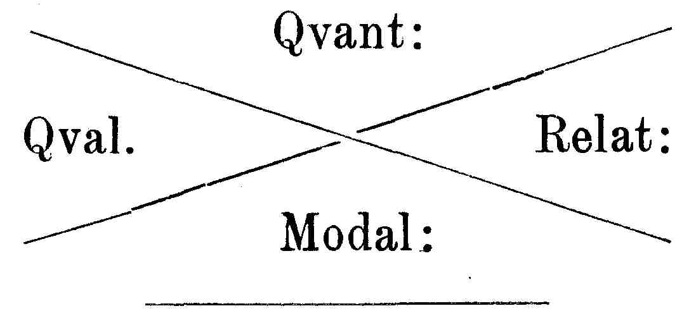

Kant: AA XVIII, Metaphysik Zweiter Theil , Seite 279 |
||||||||||
Zeile:
|
Text:
|
Verknüpfungen:
|
|
|||||||
| 5640. ψ1. L Bl. B 2. S. II. R I 93. |
||||||||||
| 02 | Eine Vernunft, die sinnlich wäre, wäre nicht Vernunft. | |||||||||
| 03 | Von der angeerbten und doch zugerechneten Bosheit. | |||||||||
| 04 | Kurz, der Schlüssel ist dieser: Freyheit bedeutet die Moglichkeit Beziehung | |||||||||
| 05 | einer Handlung als Erscheinung theils (g einer Seits ) auf Ursachen | |||||||||
| 06 | in der Erscheinung theils und anderer Seits auf ein intelligibeles | |||||||||
| 07 | Vermögen derselben, wodurch sie selbst die Ursache der Erscheinungen sind | |||||||||
| 08 | und in Ansehung dessen die empirische Bedingungen nicht bestimmend sind. | |||||||||
| 5641. ψ1. Auf der Rückseite von C. Speners Brief an Kant vom 28. Apr. 1781 (X 248): |
[ AA 102, Seite 265 ]
[ Brief 162 ] |
|||||||||
| 11 |  |
|||||||||
| 12 | ||||||||||
| 13 | ||||||||||
5642. ψ1. L Bl. D 24. S. I, II. R I 260—263. |
||||||||||
| 15 | S. I. Am oberen Rande: | |||||||||
| 16 | Mein scheinbarer Idealism ist die Einschränkung der sinnlichen Anschauung | |||||||||
| 17 | auf bloße Erfahrung und verhütung, daß wir nicht mit ihnen | |||||||||
| 18 | über die Grenze derselben zu Dingen an sich selbst ausschweifen.* Er ist | |||||||||
| 19 | blos die Verhütung des transscendentalen vitii subreptionis, da man | |||||||||
| 20 | seine Vorstellungen zu Sachen macht. Ich habe diese Lehre einmal den | |||||||||
| 21 | transscendentalen Idealism genannt, weil man keinen Nahmen davor hat. | |||||||||
| 22 | *(g Es würde um der Gegenstande der Erfahrung willen nicht | |||||||||
| 23 | verlohnt haben, seine principien so hoch anzulegen. Man mag die Erkentnis | |||||||||
| [ Seite 278 ] [ Seite 280 ] [ Inhaltsverzeichnis ] |
||||||||||
;){kind=link}